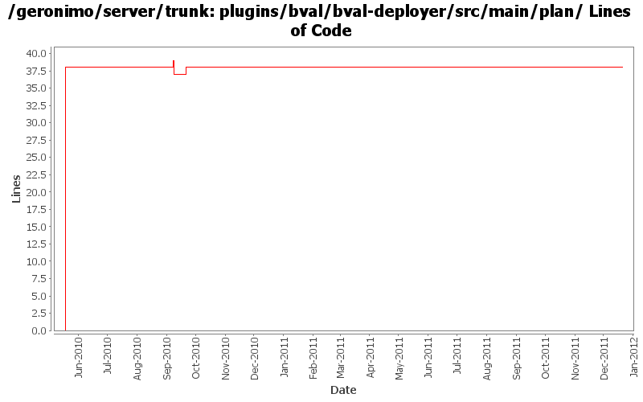

[root]/plugins/bval/bval-deployer/src/main/plan

| Author | Changes | Lines of Code | Lines per Change |
|---|---|---|---|
| Totals | 6 (100.0%) | 60 (100.0%) | 10.0 |
| djencks | 2 (33.3%) | 45 (75.0%) | 22.5 |
| rickmcguire | 2 (33.3%) | 13 (21.7%) | 6.5 |
| vamsic007 | 1 (16.7%) | 1 (1.7%) | 1.0 |
| gawor | 1 (16.7%) | 1 (1.7%) | 1.0 |
GERONIMO-6240 Modify configs so that they use features as the bootstrap, and fix a few compile and test errors. Servers build but do not fully start
7 lines of code changed in 1 file:
add explicit import on some bean validation package so that META-INF resource lookups are delegated to the bean validation bundle. That makes bean validation tck pretty happy
1 lines of code changed in 1 file:
fix a couple of problems with the bval default environment
1 lines of code changed in 1 file:
restore default environment to the BValNamingBuilder, remove extraneous setAttribute() for PersistenceUnitGBean
12 lines of code changed in 1 file:
GERONIMO-5222 Add support for application validation descriptor support for deployed applications
o Support for web applications
o ModuleBuilderExtension to add ValidatorFactoryGBean.
o Hook the module builder extension to tomcat builder.
1 lines of code changed in 1 file:
GERONIMO-5221 very basic support for unconfigured Validator and ValidatoryFactory
38 lines of code changed in 1 file: